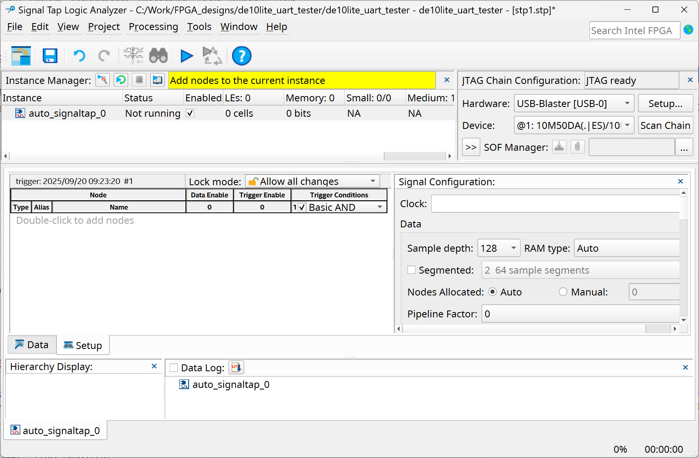

Tutorial: Quartus Prime RS232-UART IP Core#
- Serial Communication
- RS232 UART IP Core
- Serial TX Testing
- Analyzing the Serial Tx Signal Using a Digital Oscilloscope
- Analyzing the Serial TX Signal Using a USB Logic Analyzer
- Using a USB-to-Serial Module
- Python Code for Serial Testing
- Serial Loopback Test
- On-Chip Debug with Signal Tap Logic Analyzer
Serial Communication#
Data communication between devices can be classified such as
- bit-serial vs. bit-parallel: Devices can transmit one bit at a time (serial) or multiple bits simultaneously (parallel).
- synchronous vs. asynchronous: In synchronous communication, data is transmitted with a shared clock; in asynchronous, data uses start/stop bits and no shared clock.
- half-duplex vs. full-duplex: Half-duplex allows data in both directions but only one at a time. Full-duplex allows simultaneous two-way communication.
- single-ended vs. differential signaling: Single-ended uses one wire per signal with a reference (often ground). Differential uses a pair of wires carrying opposite-polarity signals for noise immunity.
- point-to-point vs. bus: Point-to-point connects only two devices. A bus connects multiple devices sharing the same communication path.
- with handshaking vs. without handshaking: With handshaking, devices use control signals — like request-to-send (RTS) or busy-wait — to coordinate when data is sent. This ensures the sender only transmits data when the receiver is ready. Without handshaking, data is sent without any coordination, which can lead to timing errors if the receiver is not ready.
In this tutorial, we will focus on UART, which stands for "Universal Asynchronous Receiver / Transmitter". It is a widely used protocol for asynchronous, bit-serial, full-duplex (two-way) communication between two hardware devices.
A UART can be considered a hardware module responsible for the transmission and reception of data over a serial port interface. The idle (no-data) state on a serial line is typically a logic-high state.
The UART hardware transmits each character framed with a logic-low start bit, an arbitrary number of data bits (typically 8 bits), an optional parity bit, and one or more stop bits. In most UART implementations, the least significant bit (LSB) is transmitted first.
A commonly used standard for serial configuration is known as 8N1: eight (8) data bits, no (N) parity bit, and one (1) stop bit. UART requires two data pins for two-way communication, namely TX (output) and RX (input).
Figure: UART frame (8N1)
Some UART implementations include flow control signals such as CTS (Clear to Send) and RTS (Request to Send). They may also include FIFOs for RX and TX data buffering.
With a UART hardware unit, simple data communication between a host computer and an FPGA board can be established. Although many open-source IP cores exist for UART implementation, we can use the RS232 UART IP core provided by Intel/Altera when working with their FPGA devices.
Next, we will learn how to use the RS232 UART IP core provided by Quartus Prime and test it on the DE10-Lite FPGA board.
RS232 UART IP Core#
This section provides a guideline for using RS232 UART IP core:
- Open Quartus Prime, create a new FPGA project using the New Project Wizard, then go to the menu "Tools > Platform Designer" to start the Platform Designer tool.
- Add the RS-232 UART IP core to the System Contents. Select the IP core from "Library > University Program > Communication > RS232 UART".
- Configure the IP core: select "Streaming" for the Avalon interface type.
Use the
8N1configuration and a baud rate of115200. - Export and rename the selected UART signals, then connect the clock and reset signals for the components as shown in the wiring diagram below.
- Click the "Generate HDL" button to generate code for the IP core. Choose VHDL as the output type and specify the output directory for the IP core files.
- Save the Platform Designer project (
.qsys) - After generating the IP core, add the
.qsysto the project. - Instantiate the RS232 UART IP core in your top-level design.
Figure: Platform Designer
Figure: System Contents view in Platform Designer
Figure: Adding the RS232 UART IP core
Figure: Configuring the RS232 UART IP core (Streaming mode, 8N1, 115200)
Figure: Exporting, renaming signals (clk, reset, from_uart, to_uart, uart) and connecting the components (clk_0 and rs232_0) in the System Contents
Figure: Generating HDL code
Figure: Saving the Platform Designer System file (.qsys)
Figure: Adding the Platform Designer System file (.qsys) to the project
Note that Avalon is the name of a bus architecture for a CPU-based system, originally designed by Altera. Basically, the Avalon bus has two interface types:
- "Memory-Mapped" (Avalon-MM)
- "Streaming" (Avalon-ST)
In this example, we will use the Avalon Streaming interface for the UART IP core.
Serial TX Testing#
In this section, an example VHDL code is provided
to test the UART IP core in data transmission mode.
The following VHDL code shows how to instantiate the UART core (uart_core)
and connect its interface signals in the top-level design (uart_tester).
The design implements an FSM to send a predefined string (e.g. Hello!\r\n)
as a sequence of characters at a baud rate of 115200.
The FSM sends one byte to the UART and waits for the transmitted byte to complete before proceeding to the next byte.
VHDL Code Listing: uart_tester.vhd
LIBRARY ieee;
USE ieee.std_logic_1164.ALL;
USE ieee.numeric_std.ALL;
ENTITY uart_tester IS
PORT (
CLK : IN STD_LOGIC;
RESET_N : IN STD_LOGIC;
UART_RXD : IN STD_LOGIC;
UART_TXD : OUT STD_LOGIC;
LEDS : OUT STD_LOGIC_VECTOR(7 DOWNTO 0)
);
END ENTITY;
ARCHITECTURE rtl_v1 OF uart_tester IS
COMPONENT uart_core IS
PORT (
clk_clk : IN STD_LOGIC;
reset_reset_n : IN STD_LOGIC;
from_uart_ready : IN STD_LOGIC;
from_uart_data : OUT STD_LOGIC_VECTOR(7 DOWNTO 0);
from_uart_error : OUT STD_LOGIC;
from_uart_valid : OUT STD_LOGIC;
to_uart_data : IN STD_LOGIC_VECTOR(7 DOWNTO 0);
to_uart_error : IN STD_LOGIC;
to_uart_valid : IN STD_LOGIC;
to_uart_ready : OUT STD_LOGIC;
uart_RXD : IN STD_LOGIC;
uart_TXD : OUT STD_LOGIC
);
END COMPONENT uart_core;
-- Signals to connect to UART IP core
SIGNAL rx_uart_ready : STD_LOGIC;
SIGNAL rx_uart_data : STD_LOGIC_VECTOR(7 DOWNTO 0);
SIGNAL rx_uart_error : STD_LOGIC;
SIGNAL rx_uart_valid : STD_LOGIC;
SIGNAL tx_uart_data : STD_LOGIC_VECTOR(7 DOWNTO 0);
SIGNAL tx_uart_error : STD_LOGIC := '0';
SIGNAL tx_uart_valid : STD_LOGIC := '0';
SIGNAL tx_uart_ready : STD_LOGIC;
-- FSM states
TYPE state_type IS (ST_IDLE, ST_SEND_BYTE, ST_UPDATE_LED, ST_DELAY);
SIGNAL state : state_type := ST_IDLE;
-- Array of bytes to send
TYPE byte_array_t IS ARRAY (0 TO 7) OF STD_LOGIC_VECTOR(7 DOWNTO 0);
CONSTANT TEST_BYTES : byte_array_t := (
x"48", -- 'H'
x"65", -- 'e'
x"6C", -- 'l'
x"6C", -- 'l'
x"6F", -- 'o'
x"21", -- '!'
x"0D", -- '\r'
x"0A" -- '\n'
);
SIGNAL byte_index : INTEGER RANGE 0 TO TEST_BYTES'length - 1 := 0;
CONSTANT CNT_MAX : INTEGER := 10e6 - 1;
SIGNAL wait_cnt : INTEGER RANGE 0 TO CNT_MAX := 0;
BEGIN
-- Instantiate UART IP Core
u0 : uart_core
PORT MAP(
clk_clk => CLK,
reset_reset_n => reset_n,
UART_RXD => UART_RXD,
UART_TXD => UART_TXD,
from_uart_ready => rx_uart_ready,
from_uart_data => rx_uart_data,
from_uart_error => rx_uart_error,
from_uart_valid => rx_uart_valid,
to_uart_data => tx_uart_data,
to_uart_error => tx_uart_error,
to_uart_valid => tx_uart_valid,
to_uart_ready => tx_uart_ready
);
-- FSM process
fsm_proc: PROCESS (CLK, RESET_N)
BEGIN
IF RESET_N = '0' THEN
state <= ST_IDLE;
tx_uart_valid <= '0';
tx_uart_data <= (OTHERS => '0');
LEDS <= (OTHERS => '0');
byte_index <= 0;
wait_cnt <= 0;
ELSIF rising_edge(CLK) THEN
CASE state IS
WHEN ST_IDLE =>
-- Wait until UART ready to accept new data for TX
IF tx_uart_ready = '1' THEN
tx_uart_data <= TEST_BYTES(byte_index);
tx_uart_valid <= '1'; -- assert data valid to UART
state <= ST_SEND_BYTE;
END IF;
WHEN ST_SEND_BYTE =>
-- Deassert valid after one clock
tx_uart_valid <= '0';
state <= ST_UPDATE_LED;
WHEN ST_UPDATE_LED =>
LEDS <= TEST_BYTES(byte_index); -- show byte on LEDs
-- increment index for next byte
IF byte_index = TEST_BYTES'length - 1 THEN
wait_cnt <= CNT_MAX;
byte_index <= 0; -- wrap to first byte
ELSE
wait_cnt <= CNT_MAX/100;
byte_index <= byte_index + 1;
END IF;
state <= ST_DELAY;
WHEN ST_DELAY =>
IF wait_cnt = 0 THEN
state <= ST_IDLE; -- send next byte
ELSE
wait_cnt <= wait_cnt - 1;
END IF;
END CASE;
END IF;
END PROCESS;
END ARCHITECTURE;
Figure: Compilation for the Quartus project.
The Tcl script for FPGA pin assignment (for the DE10-Lite FPGA board) is given as an example below.
#set_global_assignment -name DEVICE 10M50DAF484C7G
#set_global_assignment -name FAMILY "MAX 10"
set_instance_assignment -name IO_STANDARD "3.3-V LVTTL" -to CLK
set_instance_assignment -name IO_STANDARD "3.3 V Schmitt Trigger" -to RESET_N
set_location_assignment PIN_P11 -to CLK
set_location_assignment PIN_B8 -to RESET_N
set_instance_assignment -name IO_STANDARD "3.3-V LVTTL" -to UART_RXD
set_instance_assignment -name IO_STANDARD "3.3-V LVTTL" -to UART_TXD
set_location_assignment PIN_V5 -to UART_RXD
set_location_assignment PIN_W7 -to UART_TXD
set_instance_assignment -name IO_STANDARD "3.3-V LVTTL" -to LEDS[0]
set_instance_assignment -name IO_STANDARD "3.3-V LVTTL" -to LEDS[1]
set_instance_assignment -name IO_STANDARD "3.3-V LVTTL" -to LEDS[2]
set_instance_assignment -name IO_STANDARD "3.3-V LVTTL" -to LEDS[3]
set_instance_assignment -name IO_STANDARD "3.3-V LVTTL" -to LEDS[4]
set_instance_assignment -name IO_STANDARD "3.3-V LVTTL" -to LEDS[5]
set_instance_assignment -name IO_STANDARD "3.3-V LVTTL" -to LEDS[6]
set_instance_assignment -name IO_STANDARD "3.3-V LVTTL" -to LEDS[7]
set_location_assignment PIN_A8 -to LEDS[0]
set_location_assignment PIN_A9 -to LEDS[1]
set_location_assignment PIN_A10 -to LEDS[2]
set_location_assignment PIN_B10 -to LEDS[3]
set_location_assignment PIN_D13 -to LEDS[4]
set_location_assignment PIN_C13 -to LEDS[5]
set_location_assignment PIN_E14 -to LEDS[6]
set_location_assignment PIN_D14 -to LEDS[7]
Analyzing the Serial Tx Signal Using a Digital Oscilloscope#
In this section, a digital oscilloscope is used to measure and analyze the TX signal of the UART interface. The following are examples of signal waveforms resulting from measuring the TX pin with a digital oscilloscope. Note that modern digital oscilloscopes can analyze RS232 UART signals and decode the data.
Figure: Sending the character 'H'
Figure: Sending the character 'e'
Figure: Sending the character 'o'
Figure: Sending the character LF (Line Feed)
Analyzing the Serial TX Signal Using a USB Logic Analyzer#
In addition, a low-cost USB logic analyzer (such as WeAct LogicAnalyzer V1 ) can also be used with Sigrok-PulseView software to capture and decode the serial Tx data.
Figure: Serial data decoding in PulseView
Note: The ASCII code of the character H in the ASCII table is 0x40.
Using a USB-to-Serial Module#
In this section, we will use a USB-to-serial module (3.3V logic level) to interface with the DE10-Lite FPGA board according to the wiring diagram below).
Wiring Diagram
USB-to-Serial FPGA
--------------------------------------
TXD pin ----> UART_RXD pin
RXD pin <---- UART_TXD pin
GND ----- GND
--------------------------------------
In this tutorial, we use the WCH-DAPlink module (with a serial interface) as an example.
Figure: WCH-DAPlink with a serial interface
Figure: Interfacing between the USB-to-Serial module and the FPGA board.
Note:
- On Windows, you may need to install a USB device driver for the USB-to-serial module, depending on the chip used on the module (e.g., CP210x, FT232 and CH34x).
To receive data from the FPGA board via the USB-to-serial module, a terminal program for Windows such as Tera Term can be used.
- Download and install the Tera Term program.
- Open the Tera Term program and go to "Setup > Serial Port...".
- Configure the serial port (select the correct port number, 8N1 and the baud rate), then click the Open button to connect to the serial port and receive data.
Figure: Configuring the serial port in Tera Term
Figure: Receiving data from the serial port in Tera Term
Alternatively, VS Code IDE together with the Serial Monitor extension can be used for this purpose.
- For Windows users, refer to Visual Studio Code on Windows for setup guidelines.
Figure: Installing the Serial Monitor extension in VS Code IDE
Figure: Receiving data from the serial port in VS Code IDE using the Serial Monitor
Python Code for Serial Testing#
This Python script is provided as an example. After opening the serial port, it waits for an incoming byte and sends the received byte back to the serial port, corresponding to the serial loopback test. Note that in this example, the FPGA acts as the initiator, starting the data transmission first.
Note:
- For installing Python on Windows, refer to "Get started using Python on Windows for beginners".
- It is recommended to install and use the VS Code IDE for writing and running Python code.
import serial
# Configure and open the serial port
ser = serial.Serial(
port="/dev/ttyACM0", # Specify the serial port (e.g. 'COM13' on Windows)
baudrate=115200, # Set the baud rate
timeout=0.1, # Set serial timeout (in seconds) for reading data
)
print(f"Opened {ser.portstr} (waiting for incoming bytes...)")
try:
recv_str = ""
while True:
# Wait for one incoming byte (blocks until a byte is received)
# Read exactly one byte
incoming = ser.read(1) # This returns a 'bytes' object
if incoming:
# Send the same byte back
ser.write(incoming)
# Convert the raw byte object into a string (Unicode)
ch = incoming.decode("utf-8", errors="replace")
# Append the received character to the received string
recv_str = recv_str + ch
if ch == "\n": # if newline is received
print(f"Received message: {recv_str}", end="")
recv_str = "" # Clear the received string
except KeyboardInterrupt: # if Ctrl+C is pressed by the user
print("Terminated...")
finally:
if ser:
ser.close() # Close the serial port
print("Serial port closed.")
Figure: Running the Python script in VS Code IDE (Ubuntu OS)
Figure: Running the Python script in VS Code IDE (Windows 11)
Note:
- This Python script uses the
pyserialpackage for serial communication. Make sure that this package is installed, for example, by using the following pip command:
pip install pyserial
Serial Loopback Test#
In this example, we revise the previous VHDL code to operate in serial loopback mode. The FPGA waits for an incoming byte from the host computer (Python) via the UART and sends the received byte back to the UART.
LIBRARY ieee;
USE ieee.std_logic_1164.ALL;
USE ieee.numeric_std.ALL;
ENTITY uart_tester IS
PORT (
CLK : IN STD_LOGIC;
RESET_N : IN STD_LOGIC;
UART_RXD : IN STD_LOGIC;
UART_TXD : OUT STD_LOGIC;
LEDS : OUT STD_LOGIC_VECTOR(7 DOWNTO 0)
);
END ENTITY;
ARCHITECTURE rtl_v2 OF uart_tester IS
COMPONENT uart_core IS
PORT (
clk_clk : IN STD_LOGIC;
reset_reset_n : IN STD_LOGIC;
from_uart_ready : IN STD_LOGIC;
from_uart_data : OUT STD_LOGIC_VECTOR(7 DOWNTO 0);
from_uart_error : OUT STD_LOGIC;
from_uart_valid : OUT STD_LOGIC;
to_uart_data : IN STD_LOGIC_VECTOR(7 DOWNTO 0);
to_uart_error : IN STD_LOGIC;
to_uart_valid : IN STD_LOGIC;
to_uart_ready : OUT STD_LOGIC;
uart_RXD : IN STD_LOGIC;
uart_TXD : OUT STD_LOGIC
);
END COMPONENT;
-- Signals to/from UART IP core
SIGNAL rx_uart_data : STD_LOGIC_VECTOR(7 DOWNTO 0);
SIGNAL rx_uart_error : STD_LOGIC;
SIGNAL rx_uart_valid : STD_LOGIC;
SIGNAL tx_uart_data : STD_LOGIC_VECTOR(7 DOWNTO 0);
SIGNAL tx_uart_error : STD_LOGIC := '0';
SIGNAL tx_uart_valid : STD_LOGIC := '0';
SIGNAL tx_uart_ready : STD_LOGIC;
-- This is usually tied high to always accept data
SIGNAL rx_uart_ready : STD_LOGIC := '1';
BEGIN
-- Instantiate UART IP Core
u0 : uart_core
PORT MAP(
clk_clk => CLK,
reset_reset_n => RESET_N,
from_uart_ready => rx_uart_ready,
from_uart_data => rx_uart_data,
from_uart_error => rx_uart_error,
from_uart_valid => rx_uart_valid,
to_uart_data => tx_uart_data,
to_uart_error => tx_uart_error,
to_uart_valid => tx_uart_valid,
to_uart_ready => tx_uart_ready,
uart_RXD => UART_RXD,
uart_TXD => UART_TXD
);
--------------------------------------------------------------------
-- Loopback process: wait for incoming byte, send it back immediately
--------------------------------------------------------------------
PROCESS (CLK, RESET_N)
BEGIN
IF RESET_N = '0' THEN
tx_uart_valid <= '0';
tx_uart_data <= (OTHERS => '0');
LEDS <= (OTHERS => '0');
ELSIF rising_edge(CLK) THEN
tx_uart_valid <= '0';
-- When a new byte arrives from UART RX
IF rx_uart_valid = '1' THEN
-- Put the received byte on LEDs
LEDS <= rx_uart_data;
-- If UART TX is ready, send it back
IF tx_uart_ready = '1' THEN
tx_uart_data <= rx_uart_data;
tx_uart_valid <= '1'; -- assert one clock to send
END IF;
END IF;
END IF;
END PROCESS;
END ARCHITECTURE;
The following Python code corresponds to the serial loopback test. It sends a predefined string byte by byte and waits for each incoming byte before proceeding to the next one.
import serial
import time
# Configure and open the serial port
ser = serial.Serial(
port="/dev/ttyACM0", # specify the serial port (e.g. 'COM13' on Windows)
baudrate=115200, # set the baud rate
timeout=0.1, # set serial timeout (in seconds) for reading data
)
print(f"Opened {ser.portstr}")
try:
msg = "Hello World!\r\n"
recv_str = ""
while True:
for ch in msg:
# Send each character as a 'bytes' object
ser.write( ch.encode("utf-8") )
time.sleep(0.001) # Add some delay (in seconds)
# Read exactly one byte
incoming = ser.read(1)
if incoming:
# Decode incoming byte to string
ch_in = incoming.decode("utf-8", errors="replace")
recv_str += ch_in
if ch_in == "\n": # if the newline character is received
print(f"Received message: {recv_str}", end="")
recv_str = ""
time.sleep(1.0) # pause for 1 second after full line
except KeyboardInterrupt:
print("\nTerminated...")
finally:
if ser:
ser.close()
print("Serial port closed.")
Figure: Running the Python script in VS Code IDE (Windows 11) for serial-loopback test
On-Chip Debug with Signal Tap Logic Analyzer#
In this section, we will learn how to use the Signal Tap Logic Analyzer tool which is part of the Quartus Prime software.
Steps to set up and include the Signal Tap Logic Analyzer in the project
- Complete the Full Compilation process for the design project first.
- Go to "Tools > Signal Tap Logic Analyzer".
- In the Setup tab, double-click in the Node Table area and
add the nodes (signal names) that will be captured at runtime by the Signal Tap LA.
- For the Filter option, select "Signal Tap: pre-synthesis"
- Click the List button to show the filtered node names.
- Add the selected node names (e.g.
tx_uart_validandtx_uart_data) and click the Insert buttton.
- Select a signal to use as the trigger and configure the trigger condition.
- Use the
tx_uart_valid(rising edge) as the trigger condition.
- Use the
- In the Signal Configuration tab, select the clock input signal
as the clock source for the Signal Tap LA
- Use the
CLKsignal in the top-level design.
- Use the
- Select the RAM capacity (Sample Depth) and use the Segmented Sample Memory.
- Save the Signal Tap LA configuration to a
.stpfile. This file will be added to the design project. - Recompile the project (full compilation) and upload the bitstream to the FPGA board.
- If the Signal Tap LA is "ready to acquire", click "Run Analysis" and observe the waveforms in the Data tab.
Figure: Starting Signal Tap Logic Analyzer in Quartus Prime

Figure: The main window of Signal Tap Logic Analyzer

Figure: Filtering and adding nodes of the design for logic analysis
Figure: Setting the trigger condition for the logic analyzer
Figure: Selecting the Clock signal, configuring the Sample Depth and selecting the "Segmented Sample Memory" option
Figure: Saving the Signal Tap LA configuration to a .stp file
Figure: Adding the .stp file to the project.
Figure: Starting the Signal Tap LA to run the analysis
The following sample waveforms show a sequence of characters sent to the UART unit on the FPGA.
Figure: Samples displayed as waveforms in the Data tab
In summary, the Signal Tap LA is a useful tool for monitoring and analyzing on-chip signals within an FPGA device. However, it consumes some FPGA logic resources in addition to the resources used by the user’s design.
This work is licensed under a Creative Commons Attribution-ShareAlike 4.0 International License.
Created: 2025-09-19 | Last Updated: 2025-09-20